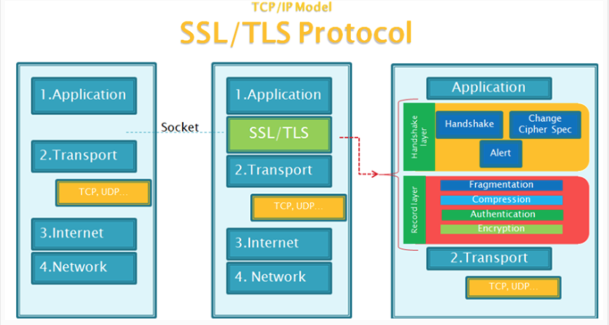

HTTPS 最近火到不要不要的，原因是苹果公司又带了一波节奏。（2017年1月1日之后，所有 IO S应用请求数据接口必须采用 HTTPS 协议），
微信小程序也跟风出了相应的要求。（不过以后全线 HTTPS 一定是大势所趋，没有任何争议），现在连 NGINX 的默认配置文件中都有
HTTPS 相关的配置项了，我们还有什么理由不替换 HTTP（让我先哭一会~~）。
所以我们的后端项目打算全线由 HTTP 协议替换为 HTTPS 协议。
科普一下 HTTPS
https 是 secure http，是 HTTP 的升级安全版。 HTTP 是应用层协议，在 HTTP 下面是传输层协议 TCP，TCP 定义数据如何传输，
HTTP 定义数据如何包装。而 HTTPS 是在 HTTP 和 TCP 中间加了一层 SSL/TLS 加密层。
啥是 SSL/TLS ?
1说人话就是 SSL 是一个加密套件。负责将 HTTP 传输的数据加密。TLS 是 SSL 的升级版。现在 HTTPS 中的加密套件一般都是 TLS.啥又是加密套件
1之前都是应用层(HTTP)将数据直接传输给传输层 TCP，现在是在数据传输时通过 SSL/TLS 进行数据加密, 再给到 TCP 进行传输。
盗了张图，感受一下：

强烈推荐看一下这个兄弟的扫盲贴
强烈推荐看一下这个兄弟的扫盲贴
强烈推荐看一下这个兄弟的扫盲贴
重要的事情说三遍
SSL 证书申请
申请SSL 证书最重要的是什么？下面是我总结的三条：
- 免费
- 免费
- 免费
当然，免费的安全等级是入门级的，找到适合自己业务的 SSL 证书最重要。
这次我要感谢企鹅云！！！
写在最后
感谢企鹅！！！！
最详细的 HTTPS 科普扫盲帖： http://www.codeceo.com/article/https-knowledge.html